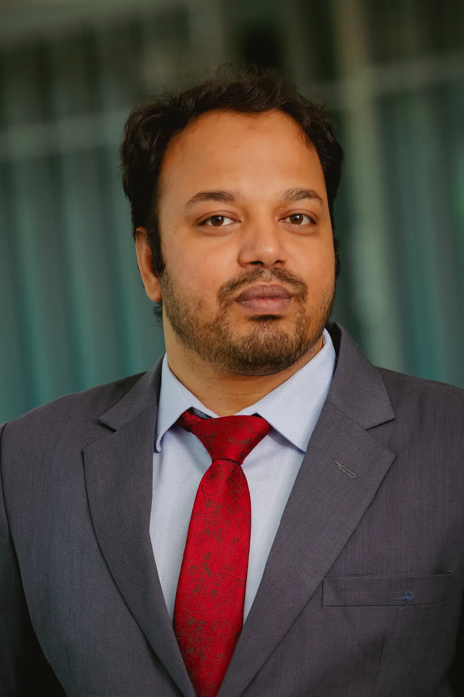

A small group working on aging, immunology, and the two organs it hits hardest. We're always looking for good people.
Daniel Tyrrell, PhD
Principal Investigator · Assistant Professor
I began my academic career at Washtenaw Community College then attended the University of Michigan. After an internship in Finland and a stint as a medical writer, I enrolled in a PhD program at Wake Forest School of Medicine. I did post-doctoral research at the University of Michigan, Dept. of Cardiovascular Medicine, using mouse models of disease, primarily examining how aging impacts atherosclerosis. I joined the Department of Pathology, Division of Molecular and Cellular Pathology at UAB Heersink School of Medicine as an Assistant Professor in 2022.
I am interested in aging and age-related disease. 99% of murine models of disease use young or juvenile animals, but the vast majority of diseases occur in old age in people, and biological systems change considerably with age. For that reason I have focused on examining age-related mechanisms of disease in old murine models, mainly vascular and immune mechanisms (T cells) of atherosclerosis and neurodegeneration. In the lab we use molecular biology approaches including flow cytometry, microscopy, and single-cell RNAseq. I am a fan of technology, especially cutting-edge research technology, so we've been using spectral flow cytometry, Split Pool Ligation-based Transcriptome sequencing (SPLiT-seq), optical tissue clearing with light-sheet microscopy, and novel analysis pipelines for these techniques.
In my free time I like to spend time with my family, play with my kids (and expose them to late ’90s and early ’00s music), and go running.
Patil earned his Bachelor's and Master's degrees in India and his PhD at Augusta University in Georgia in 2013. After his PhD he moved to the University of Utah as a postdoctoral fellow and worked on nonalcoholic fatty liver disease. In 2019 Patil moved to UAB, where he worked on mechanisms of cardiac fibrosis. He has published several impactful papers during his career, in journals including Diabetes, JACC: Basic to Translational Science, and Circulation Research. Patil joined the Tyrrell Lab in 2024 to work on projects understanding disease mechanisms of age-related changes in mitochondria and T cells in atherosclerosis.

Md. Akkas Ali, MS
PhD Candidate · AHA Predoctoral Fellow
Ali earned both his BSc and MS degrees in Genetic Engineering and Biotechnology from Shahjalal University of Science and Technology (SUST) in Sylhet, Bangladesh, in 2011 and 2013 respectively. He is in the Graduate Biomedical Science (GBS) program in the Biochemistry and Structural Biology theme at UAB, and joined Dr. Tyrrell's laboratory in April 2023.
His primary academic and research interests are focused on T cells in the brain, specifically in vascular contributions to cognitive impairment and dementia (VCID). Mr. Ali has a strong interest in immunology, specifically in T lymphocytes. Since 2018 he has been an Assistant Professor in the Department of Genetic Engineering and Biotechnology at SUST, and has an extensive teaching, publication, and presentation record.
PhD Candidate · AHA Predoctoral Fellow · UAB STAR21 Scholar
Siam earned both his Bachelor's and Master's degrees in Microbiology from the University of Dhaka in Bangladesh. He worked at BRF and icddr,b, and served as a lecturer in Microbiology at BRAC University, before starting his PhD at UAB with a prestigious AMC21 scholarship from the UAB Immunology Institute.
Siam joined the Tyrrell Laboratory in 2024 and is currently studying CD8+ T cells in the context of aging and atherosclerosis. Prior to joining the lab he published several first-authored papers, and has developed a keen interest in bioinformatics methods for studying complex biological mechanisms.
Nick earned his Bachelor of Science in Microbiology from Auburn University in 2023. Before starting his PhD he worked as a research associate at the HudsonAlpha Institute for Biotechnology, studying the regulation of neurodegenerative-associated genes. He is a GBS PhD student in the Immunology theme and an AMC21 scholar, and joined the Tyrrell Lab in March 2025.
His primary research interest is neuroimmunology, specifically the role of the immune system in neurodegenerative diseases. Outside the lab he enjoys spending time with his family, hiking with his dog, and relaxing by the pool.
Former members
People who spent time in the lab and moved on.
Ashleigh WhatleyUAB Undergraduate Immunology / MS student2024-2025
Meghan Van TolUAB Race4Path summer undergraduate2025
Harry TidwellUAB Undergraduate Volunteer / MS student2023-2025